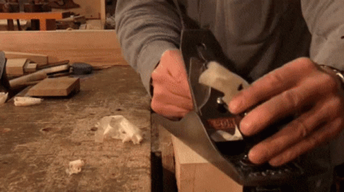
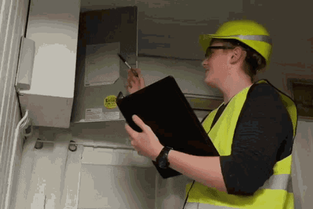

Bienvenido
FerreLeyva ofrece soluciones para su negocio. Ofrecemos atencion especializada a minoristas y mayoristas por igual.
FerreLeyva ofrece soluciones para su negocio. Ofrecemos atencion especializada a minoristas y mayoristas por igual.